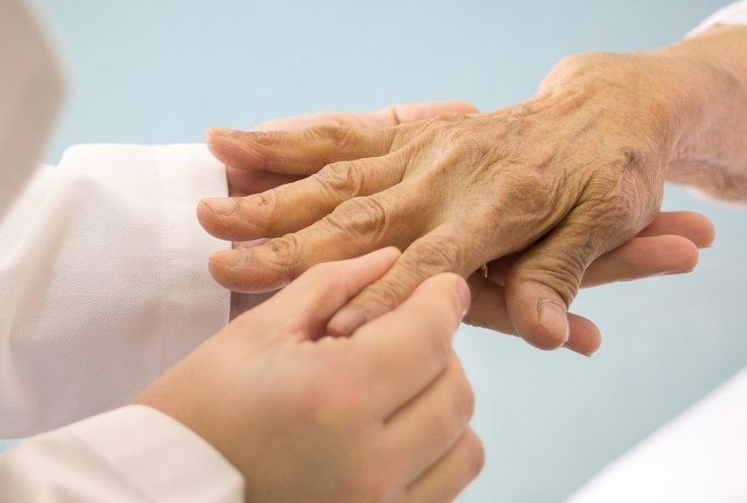

Bem vindo ao

Encontre médicos e especialidades em Garanhuns de forma rápida e organizada
Como usar o guia
Navegue pelas especialidades médicas ou busque por médicos específicos para acessar informações de contato e horários
Destaques
Pediatria
Cuidados médicos especializados para crianças e adolescentes
Cardiologia
Diagnóstico e tratamento de doenças do coração

Clinica Geral
Atendimento para consultas de rotina e prevenção de doenças

Odontologia
Tratamentos dentários e cuidados com a saúde bucal
Ginecologista
Cuidando da sua saúde feminina com atenção e respeito.

Reumatologista
Cuidando das articulações, músculos e ossos.